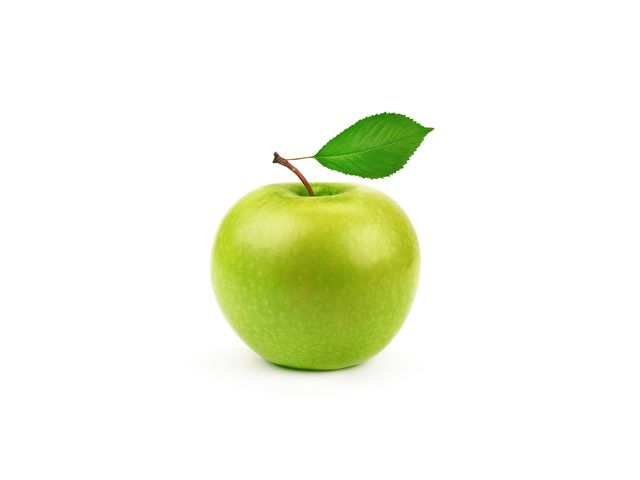

Банан
Тропический фрукт с мягкой, кремовой мякотью и желтой кожурой.
Яблоко
Сочный и ароматный плод, богатый витаминами и минералами.
Апельсин
Кисловатый цитрусовый плод с сочными дольками и ярким ароматом
Груша
Нежный фрукт с сочной и сладкой мякотью и приятным ароматом.
Клубника
Маленький ягодный плод с яркой красной окраской и сладким вкусом.
Ананас
Сладкий и ароматный тропический фрукт с сочной желтой мякотью.
Манго
Экзотический фрукт с нежной мякотью и сладким вкусом, обладающий интенсивным ароматом.
Киви

Маленький плод с зеленой кожурой и сочной зеленой мякотью, богатый витамином С и клетчаткой.